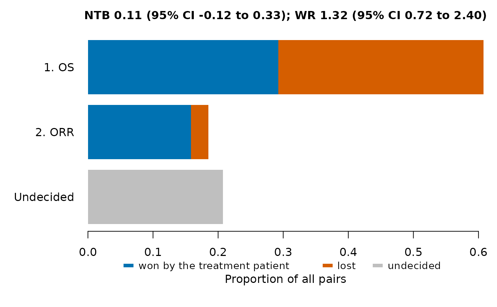
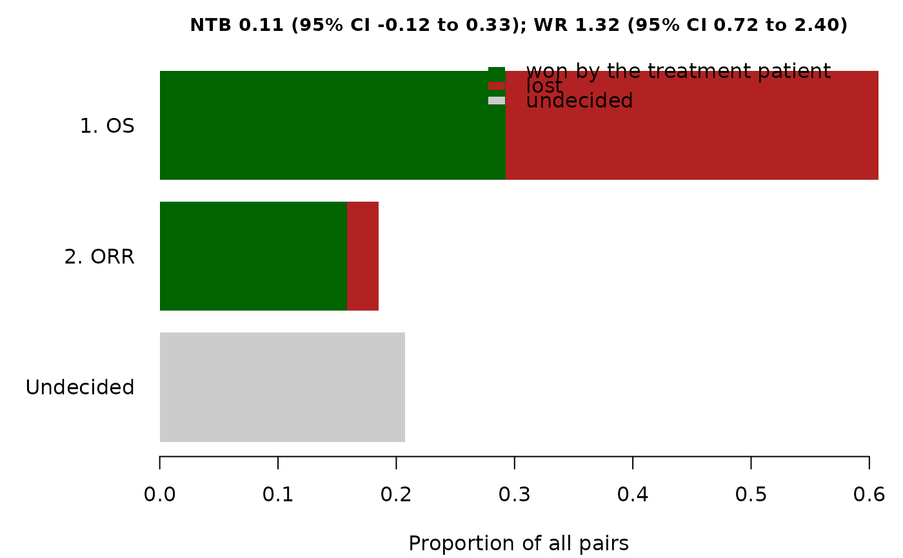

print() shows the cohorts compared, the proportions of pairs won,
lost and undecided at each priority level, and the net treatment benefit,
the win ratio and the win odds with their confidence intervals.
plot() draws one bar per priority level with the proportions of all
pairs won and lost at that level, and a last bar with the pairs that no
level decides; the title gives the net treatment benefit and the win ratio
with their confidence intervals.
Usage
# S3 method for class 'WinStat'
plot(
x,
col = c("#0072B2", "#D55E00", "grey75"),
main = NULL,
legend.position = c("bottom", "top", "topright", "topleft", "bottomright",
"bottomleft", "right", "left", "none"),
cex.main = 1,
cex.lab = 1,
cex.axis = 1,
cex.legend = 0.9,
...
)
# S3 method for class 'WinStat'
print(x, digits = 3, ...)Arguments
- x
List returned by
WinStat.- col
Colors of the pairs won, lost and undecided (recycled).
- main
Title of the plot; by default the net treatment benefit and the win ratio with their confidence intervals.
- legend.position
Position of the legend:
"bottom"(below the plot, the default) or"top"(above the plot) for a horizontal legend, a keyword oflegendsuch as"topright"for a legend inside the plot, or"none".- cex.main, cex.lab, cex.axis, cex.legend
Sizes of the title, of the axis titles, of the axis and bar labels, and of the legend (and notes), relative to the default size.
- ...
Not used.
- digits
Number of significant digits.
Value
print() returns x invisibly. plot() returns
invisibly the matrix of plotted proportions (rows won,
lost and undecided; one column per bar, from the bottom to
the top of the plot).
Examples
set.seed(1)
d <- data.frame(group = rep(c("Cohort1", "Cohort2"), each = 40),
os_tte = rexp(80, log(2) / rep(c(18, 15), each = 40)),
os_event = rbinom(80, 1, 0.6),
response = rbinom(80, 1, rep(c(0.45, 0.30), each = 40)))
eps <- list(Endpoint("OS", "tte", time = "os_tte", event = "os_event"),
Endpoint("ORR", "binary", var = "response"))
w <- WinStat(d, eps, treatment = "Cohort1", control = "Cohort2")
w
#> Generalized pairwise comparisons: Cohort1 (treatment) vs Cohort2 (control)
#> Patients: 40 and 40 (1600 pairs); scoring rule of Gehan
#>
#> Proportions of all pairs won, lost and still undecided by priority level:
#> priority endpoint threshold win loss undecided
#> 1 OS 0 0.292 0.3150 0.393
#> 2 ORR 0 0.158 0.0269 0.208
#>
#> Pairs won 0.451, lost 0.342, tied 0.207
#>
#> 95% confidence intervals:
#> statistic estimate se lower upper
#> NTB 0.109 0.118 -0.125 0.331
#> WR 1.318 0.402 0.725 2.397
#> WO 1.244 0.298 0.778 1.989
plot(w)

plot(w, col = c("darkgreen", "firebrick", "grey80"), legend.position = "topright",
cex.main = 0.9, cex.legend = 1)
